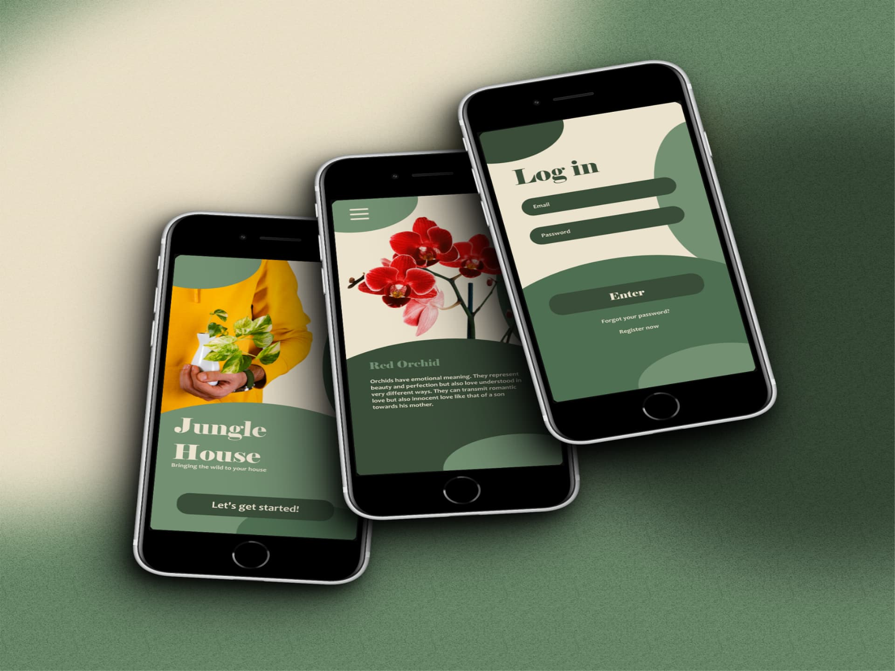

Jungle House Project
Web Design | UI/UX Design | Interface Design | Mockups & Wireframes
Jungle House Project was our first layout project when we started
the idea of the studio in a more serious way.
General information:
- Project Name: Jungle House
- Type of Platform: Web portal about plants.
- Focus: Offer data on plants that are not exclusively for indoor growing, but also for those who want to bring
the jungle into their homes.
Project objectives:
1. Variety of Plants:
- Provide detailed information on a wide range of ornamental and non-ornamental plants.
- Include details about its care, characteristics and natural habitats.
2. Explore the Jungle at Home:
- Help users connect with nature by learning about exotic and tropical plants.
- Promote the idea of "bringing the jungle home."
3. Dark Green Tones:
- Use colors that evoke the thickness of a forest to create an immersive visual experience.
Portal content:
1. Plant Database:
- Categorize plants according to their type (trees, shrubs, ferns, etc.)
- Provide information about scientific names, care and curiosities.
2. Virtual Exploration:
- Offer virtual tours through jungles and tropical forests.
- Highlight emblematic plants and their ecological importance.
3. Growing Tips:
- Section dedicated to indoor plants that require special conditions.
- Include guides to maintain healthy plants at home.
Design and style:
- Deep Green
- Use dark green tones in the interface to evoke the feeling of being in the jungle.
- Images of lush and leafy plants.
Value added:
- Environmental Education: Jungle House not only informs about plants,
but also about their role in the ecosystem and the importance of conservation.
It was developed with Lunacy, a design app similar to Figma.
Photographs Used:
pexels-ehsan-ahmadnejad-3401161 by ehsan ahmadnejad
pexels-bigparadox-10046550 by Bigparadox
They can all be found on Pexels, many thanks to the artists.
